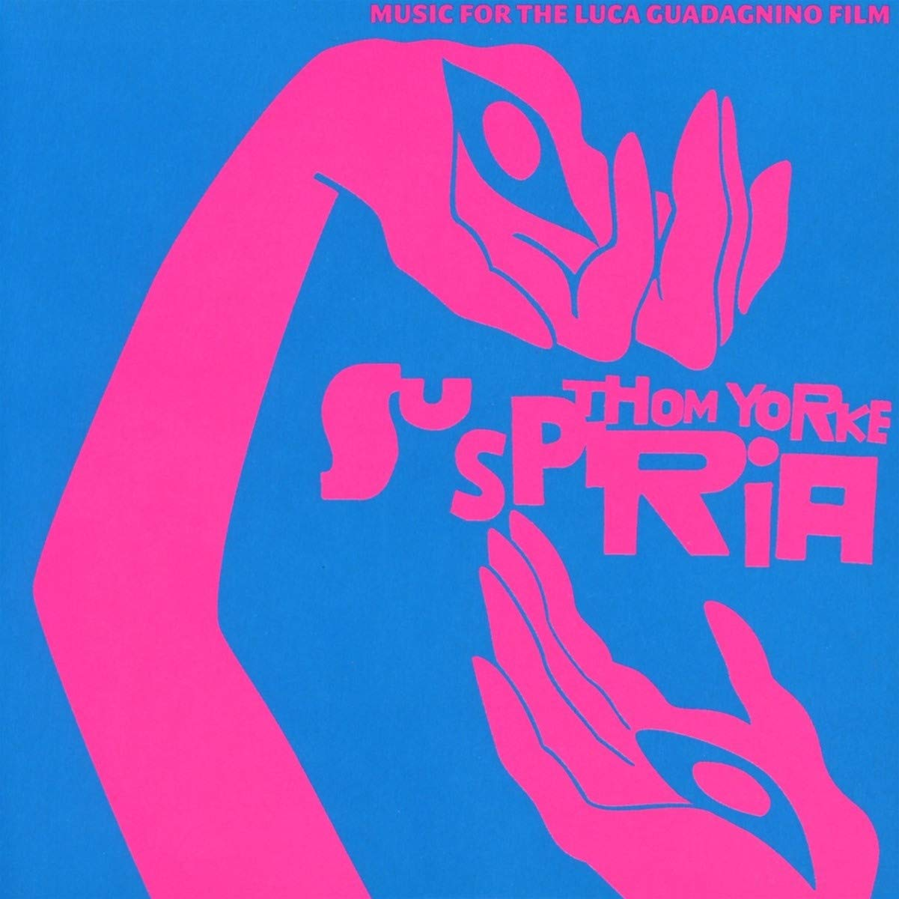
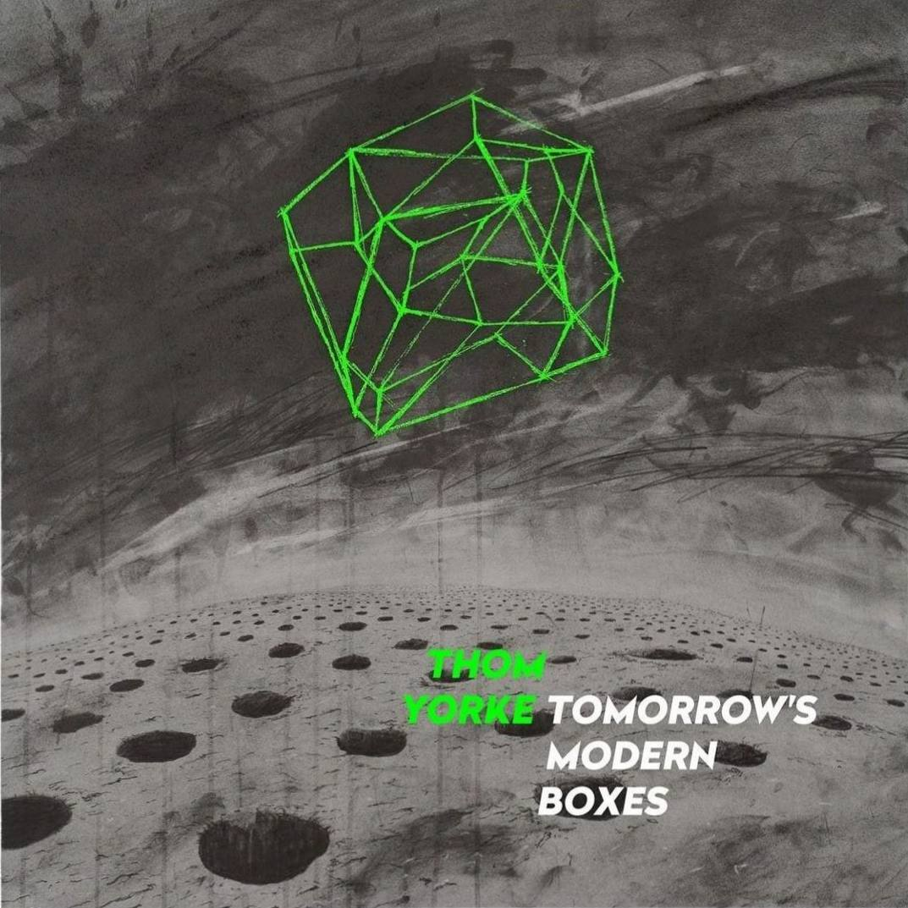
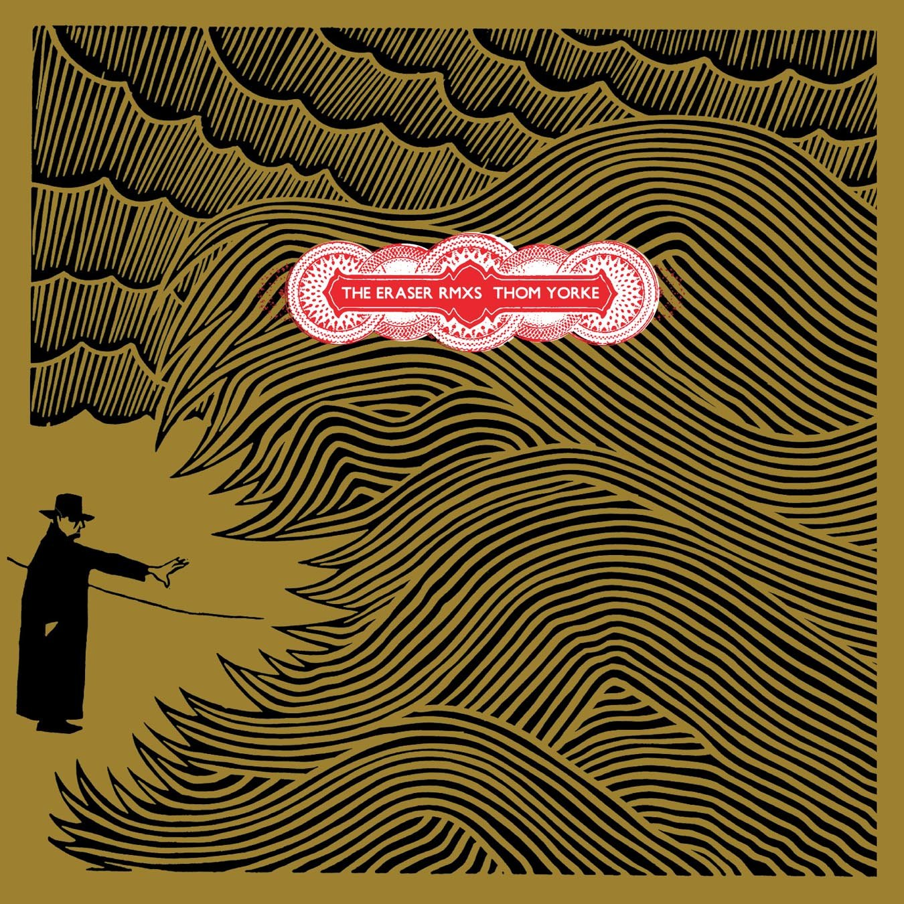
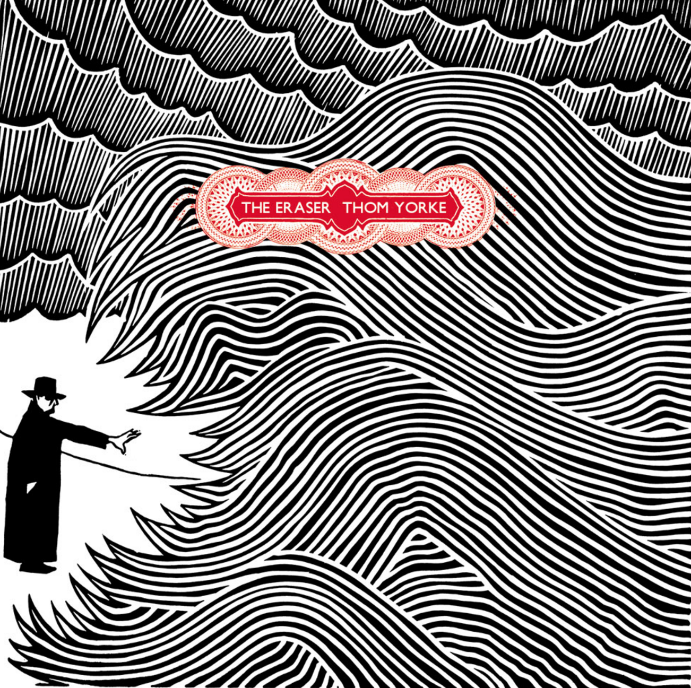

Anima (2019)

- «Traffic» 5:17
- «Last I Heard (...He Was Circling the Drain)» 5:06
- «Twist» 7:03
- «Dawn Chorus» 5:23
- «I Am a Very Rude Person» 3:44
- «Not the News» 3:57
- «The Axe» 6:59
- «Impossible Knots» 4:19
- «Runwayaway»
Released: 27 June 2019
Suspiria (2018)
- «A Storm That Took Everything» 1:47
- «The Hooks» 3:18
- «Suspirium» 3:21
- «Belongings Thrown in a River» 1:27
- «Has Ended» 4:56
- «Klemperer Walks» 1:38
- «Open Again» 2:49
- «Sabbath Incantation» 3:06
- «The Inevitable Pull» 1:36
- «Olga's Destruction (Volk Tape)» 2:58
- «The Conjuring of Anke» 2:16
- «A Light Green» 1:48
- «Unmade» 4:27
- «The Jumps 2:38»
Released: 26 October 2018
Tomorrow's Modern Boxes (2014)
- «A Brain in a Bottle» 4:41
- «Guess Again!» 4:24
- «Interference» 2:49
- «The Mother Lode» 6:07
- «Truth Ray» 5:14
- «There Is No Ice (For My Drink)» 7:00
- «Pink Section» 2:35
- «Nose Grows Some» 5:23
Released: 26 September 2014
The Eraser Rmxs (2008)
- «And It Rained All Night (Burial Remix)» 4:13
- «The Clock (Surgeon Remix)» 6:23
- «Harrowdown Hill (The Bug Remix)» 5:15
- «Skip Divided (Modeselektor Remix)» 5:38
- «Atoms For Peace (Four Tet Remix)» 5:52
- «Cymbal Rush (The Field Late Night Essen Und Trinken Remix)» 8:06
- «Black Swan (Cristian Vogel Spare Parts Remix)» 6:02
- «Analyse (Various Remix)» 4:10
- «Black Swan (Vogel Bonus Beat Eraser Remix)» 7:49
Released: 27 August 2008
The Eraser (2006)
- «The Eraser» 4:55
- «Analyse» 4:02
- «The Clock» 4:13
- «Black Swan» 4:49
- «Skip Divided» 3:35
- «Atoms for Peace» 5:13
- «And It Rained All Night» 4:15
- «Harrowdown Hill» 4:38
- «Cymbal Rush» 5:15
Released: 10 July 2006
Anima (2019)
- «Traffic» 5:17
- «Last I Heard (...He Was Circling the Drain)» 5:06
- «Twist» 7:03
- «Dawn Chorus» 5:23
- «I Am a Very Rude Person» 3:44
- «Not the News» 3:57
- «The Axe» 6:59
- «Impossible Knots» 4:19
- «Runwayaway»
Released: 27 June 2019